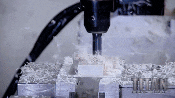

Manufacturers Of Blends,Compounding & Reactive Polymers
COMPANY PROFILE

The GLS POLYMERS PVT LTD is an ISO 9001-2008 certified by TUV SUD south Asia .The Company was established in 2005and has commenced commercial production in Jan2006.
GLS has got highly qualified experience polymer Technologists
team to produce high quality and consistent products.
The objective of the company is to provide original , effective technical solutions to polymer users and converters.
The solutions are in the form of polymer coloring, compounding, blending, grafting and other modifying and even
complete formulations to meet customers unique specification and requirements.
Our polymer compounding skills are applied to enhance and enrich the polymer
properties to make them suitable forapplications, where the original base polymer would not fulfill the need.
The company has the latest Twinscrew Extruders, having fully computerized control equipmenmt to handle all
kinds of Engineering plastics.
The unit Located in Peenya Industrial Area with 20000 Sq Ft. Which is one of the largest
industrial area in the country. The location is quite strategic from the point of proximity to many local customer and customers
out of Bangalore through easy access to national highway connecting to Mumbai, Hyderabad,
Mangalore and Chennai.
Bangalore has an International airport and is close to seaport such as
Chennai and Cochin. Hence, import and export, whether by air or sea, do not pose any constraint
Specialty Thermoplastic Blends , compounds & Reactive polymers
from GLS Polymers Pvt. Ltd Provide Flame retardant ,
Glass Reinforcement ,mineral filled , Impact resistance , Soft touch , Wear resistance , Surface Properties , UV
and color properties etc in polyolefin and Engineering Plastics.